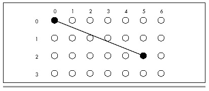
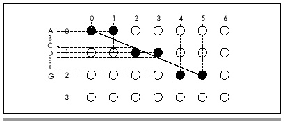

| Previous | Table of Contents | Next |
Let’s examine the case of drawing a line where the horizontal, or X length of the line is greater than the vertical, or Y length, and both lengths are greater than 0. For example, suppose we are drawing a line from (0,0) to (5,2), as shown in Figure 35.2. Note that Figure 35.2 shows the upper-left-hand corner of the screen as (0,0), rather than placing (0,0) at its more traditional lower-left-hand corner location. Due to the way in which the PC’s graphics are mapped to memory, it is simpler to work within this framework, although a translation of Y from increasing downward to increasing upward could be effected easily enough by simply subtracting the Y coordinate from the screen height minus 1; if you are more comfortable with the traditional coordinate system, feel free to modify the code in Listings 35.1 and 35.3.
In Figure 35.2, the endpoints of the line fall exactly on displayed pixels. However, no other part of the line squarely intersects the center of a pixel, meaning that all other pixels will have to be plotted as approximations of the line. The approach to approximation that Bresenham’s algorithm takes is to move exactly 1 pixel along the major dimension of the line each time a new pixel is drawn, while moving 1 pixel along the minor dimension each time the line moves more than halfway between pixels along the minor dimension.
In Figure 35.2, the X dimension is the major dimension. This means that 6 dots, one at each of X coordinates 0, 1, 2, 3, 4, and 5, will be drawn. The trick, then, is to decide on the correct Y coordinates to accompany those X coordinates.

Figure 35.2 Drawing between two pixel endpoints.
It’s easy enough to select the Y coordinates by eye in Figure 35.2. The appropriate Y coordinates are 0, 0, 1, 1, 2, 2, based on the Y coordinate closest to the line for each X coordinate. Bresenham’s algorithm makes the same selections, based on the same criterion. The manner in which it does this is by keeping a running record of the error of the line—that is, how far from the true line the current Y coordinate is—at each X coordinate, as shown in Figure 35.3. When the running error of the line indicates that the current Y coordinate deviates from the true line to the extent that the adjacent Y coordinate would be closer to the line, then the current Y coordinate is changed to that adjacent Y coordinate.
Let’s take a moment to follow the steps Bresenham’s algorithm would go through in drawing the line in Figure 35.3. The initial pixel is drawn at (0,0), the starting point of the line. At this point the error of the line is 0.
Since X is the major dimension, the next pixel has an X coordinate of 1. The Y coordinate of this pixel will be whichever of 0 (the last Y coordinate) or 1 (the adjacent Y coordinate in the direction of the end point of the line) the true line at this X coordinate is closer to. The running error at this point is B minus A, as shown in Figure 35.3. This amount is less than 1/2 (that is, less than halfway to the next Y coordinate), so the Y coordinate does not change at X equal to 1. Consequently, the second pixel is drawn at (1,0).
The third pixel has an X coordinate of 2. The running error at this point is C minus A, which is greater than 1/2 and therefore closer to the next than to the current Y coordinate. The third pixel is drawn at (2,1), and 1 is subtracted from the running error to compensate for the adjustment of one pixel in the current Y coordinate. The running error of the pixel actually drawn at this point is C minus D.

Figure 35.3 The error term in Bresenham’s algorithm.
The fourth pixel has an X coordinate of 3. The running error at this point is E minus D; since this is less than 1/2, the current Y coordinate doesn’t change. The fourth pixel is drawn at (3,1).
The fifth pixel has an X coordinate of 4. The running error at this point is F minus D; since this is greater than 1/2, the current Y coordinate advances. The third pixel is drawn at (4,2), and 1 is subtracted from the running error. The error of the pixel drawn at this point is G minus F.
Finally, the sixth pixel is the end point of the line. This pixel has an X coordinate of 5. The running error at this point is G minus G, or 0, indicating that this point is squarely on the true line, as of course it should be given that it’s the end point, so the current Y coordinate remains the same. The end point of the line is drawn at (5,2), and the line is complete.
That’s really all there is to Bresenham’s algorithm. The algorithm is a process of drawing a pixel at each possible coordinate along the major dimension of the line, each with the closest possible coordinate along the minor dimension. The running error is used to keep track of when the coordinate along the minor dimension must change in order to remain as close as possible to the true line. The above description of the case where X is the major dimension, Y is the minor dimension, and both dimensions are greater than zero is readily generalized to all eight octants in which lines could be drawn, as we will see in the C implementation.
The above discussion summarizes the nature rather than the exact mechanism of Bresenham’s line-drawing algorithm. I’ll provide a brief seat-of-the-pants discussion of the algorithm in action when we get to the C implementation of the algorithm; for a full mathematical treatment, I refer you to pages 433-436 of Foley and Van Dam’s Fundamentals of Interactive Computer Graphics (Addison-Wesley, 1982), or pages 72-78 of the second edition of that book, which was published under the name Computer Graphics: Principles and Practice (Addison-Wesley, 1990). These sources provide the derivation of the integer-only, divide-free version of the algorithm, as well as Pascal code for drawing lines in one of the eight possible octants.
The overwhelming strength of Bresenham’s line-drawing algorithm is speed. With no divides, no floating-point operations, and no need for variables that won’t fit in 16 bits, it is perfectly suited for PCs.
The weakness of Bresenham’s algorithm is that it produces relatively low-quality lines by comparison with most other line-drawing algorithms. In particular, lines generated with Bresenham’s algorithm can tend to look a little jagged. On the PC, however, jagged lines are an inevitable consequence of relatively low resolution and a small color set, so lines drawn with Bresenham’s algorithm don’t look all that much different from lines drawn in other ways. Besides, in most applications, users are far more interested in the overall picture than in the primitive elements from which that picture is built. As a general rule, any collection of pixels that trend from point A to point B in a straight fashion is accepted by the eye as a line. Bresenham’s algorithm is successfully used by many current PC programs, and by the standard of this wide acceptance the algorithm is certainly good enough.
Then, too, users hate waiting for their computer to finish drawing. By any standard of drawing performance, Bresenham’s algorithm excels.
| Previous | Table of Contents | Next |